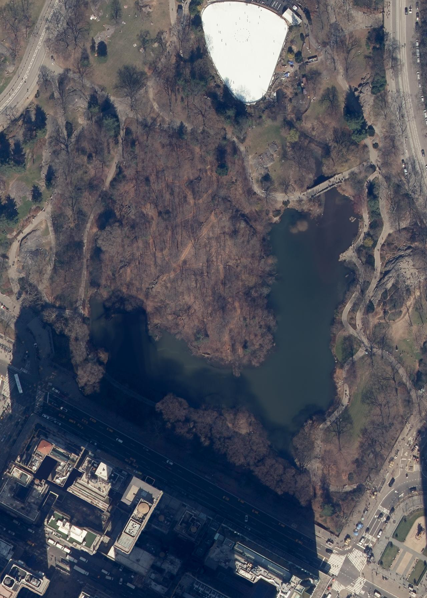

← Back to the city
SOURCE DATA / ACTUAL MODEL OUTPUT
Teaching the world where the water is.
This Central Park Pond review ran Meta's Segment Anything model locally against NYC's original 2024 aerial tiles. Mapped water and tree geometry supplied prompts. Each proposed mask then had to pass overlap checks against its mapped feature.
13 candidates. One accepted water mask. Twelve rejected tree masks. The accepted mask changes the visible water material in the game. Official shorelines still control collisions; the rejected masks create no objects.
Accepted visible waterRejected crown proposals

Original NYC OTI / NYS aerial imagery, March 2024. CC BY 4.0.
 Actual segmentation review. The model omits portions of water hidden by trees and shadows.
Actual segmentation review. The model omits portions of water hidden by trees and shadows.
The accepted water mask had 98.44% precision, 74.34% recall and 73.47% intersection-over-union against the mapped water mask. These measure consistency with that source, not independent real-world accuracy: the same source also supplied the prompts. Accepted geometry is clipped to the mapped footprint.
Sources have different dates: 2024 aerial imagery, 2022 mapped water, and crown measurements from 2013–2014 LiDAR published in 2022. SAM supplies 2D masks, not terrain, tree height, species, branches, façades or scanned 3D objects.
Full metrics, model revision and asset checksums · Meta SAM ViT-B, Apache 2.0 · NYC water data · Qin Ma tree data, CC BY 4.0 · Aerial image license